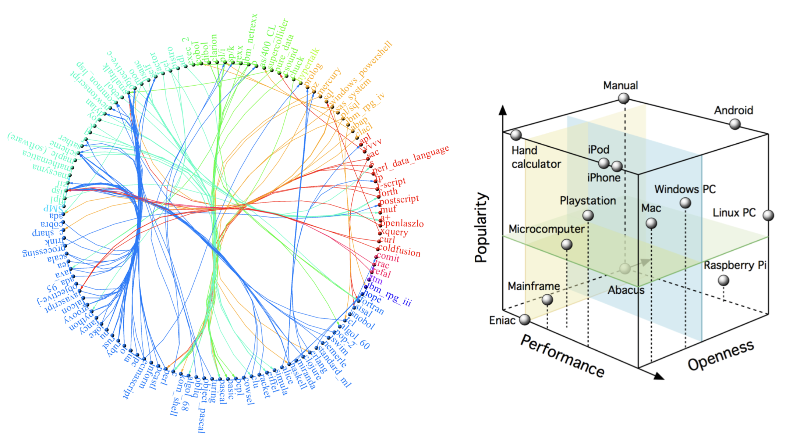
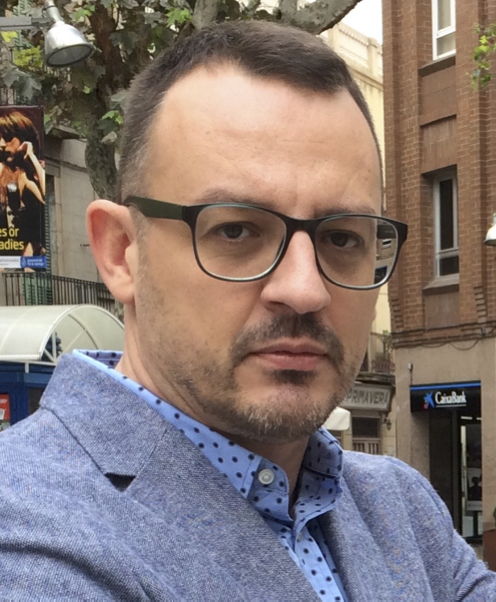
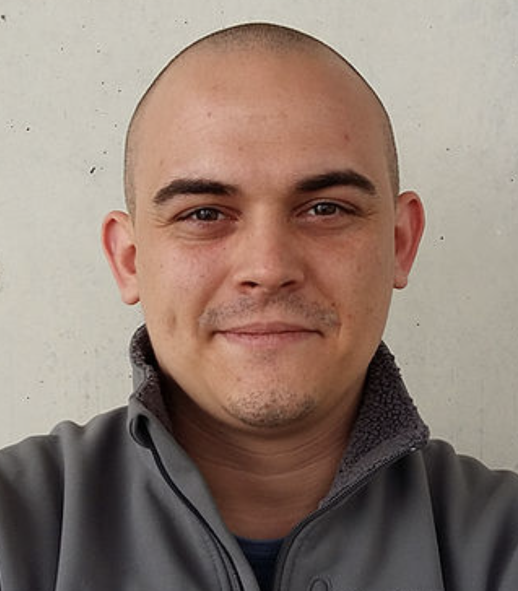
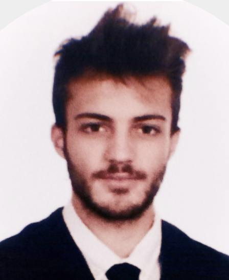
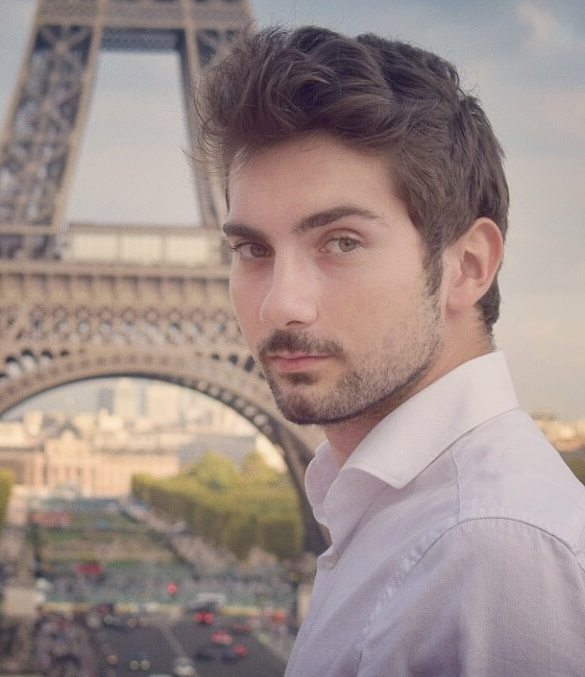
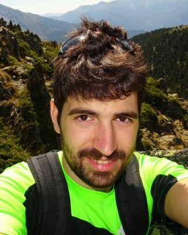
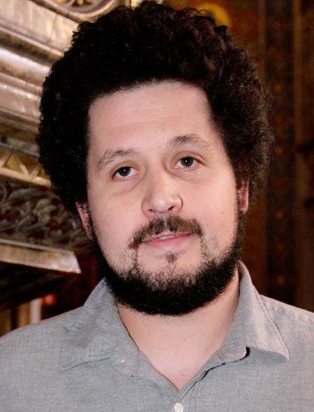

Welcome

The Evolution of Technology Lab (ETL) belongs to the Institute for Evolutionary Biology (IBE) and it is led by CSIC Tenured Scientist Sergi Valverde. The ETL develops theoretical models for the evolution of natural and artificial systems in the search for universal evolutionary principles, that is, to understand the role played by emergence, convergence and environmental fluctuations in the origin of evolutionary innovations. Cultural end technological evolution depend on social learning, which provides a non-genetic pathway for the transmission of adaptive traits. We want to understand how the pattern and process of evolution differ when traits are learned rather than transmitted genetically. To do so, we rely in our expertise in complex systems, complex networks, theoretical ecology, and synthetic and computational biology.
Our lab uses different approaches to extend evolutionary theory beyond the original domain of biology. This effort depends on both empirical analysis and theoretical modelling. An unique approach of our lab is the complex networks perspective of the evolution of technology, which we have developed over the years (see our review paper here). We also develop systematic ways to recollect and analyse the rich fossil record of inventions.
Members
|  | Sergi Valverde (Principal Investigator) |
|  | Salva Duran-Nebreda (Postdoctoral Researcher)I am a Biotechnologist and Complex Systems researcher interested in the Major Transitions in Evolution. In particular, I am fascinated by how individuality shifts as new levels of selection are created and how emergent properties appear in collective systems, from multicellular entities to ecosystems and societies. My research includes aspects of Synthetic Biology, EvoDevo, Pattern Formation, Complex Networks in Ecology and Cultural Evolution. |
|  | Miguel Roman Sánchez (Master Student) |
|  | Ivan Ortiz Sánchez (Undergraduate Student)I am a last year undergraduate student of Biomedical Engineering and I am passionate about Physics, Biology and Mathematics. I am really interested in computational modeling and complex networks and in applying them to biological, social and cultural scenarios. Thus, I am keen on studying technological events from an evolutionary point of view. In particular, during my internship in the lab, I am focused on studying the mode and the tempo of cultural evolution in video games, with the aim of establishing linkages between video game performance and the characteristics of player communities. |
External
|  | Blai Vidiella (Researcher) |
Alumni
|  | Simon Carrignon (Former PhD Student) |
Keywords: Complex Systems, Complex Networks, Cultural Evolution, Ecological Networks, Artificial Life.